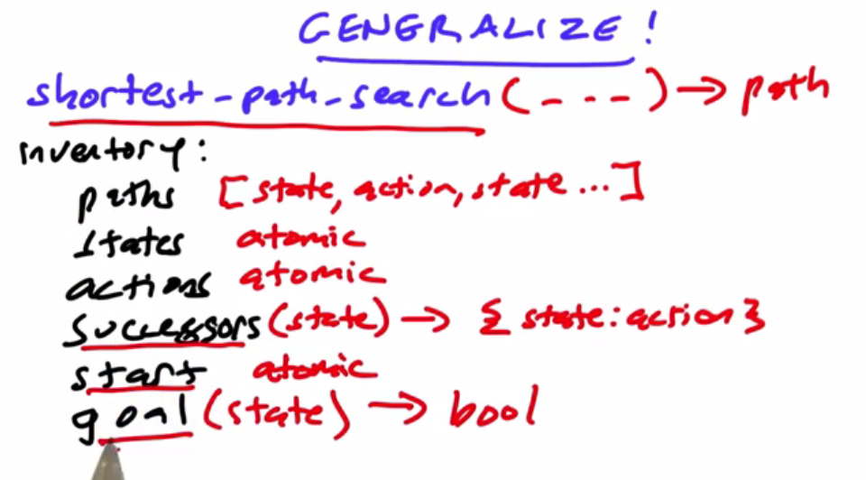
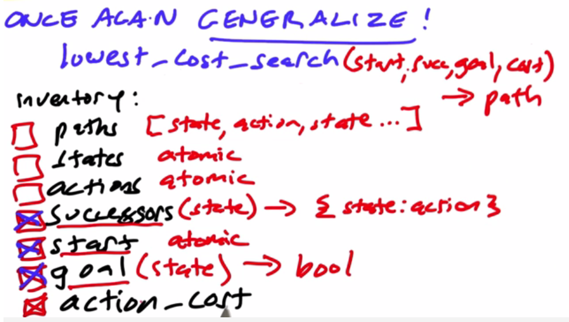

Algorithms Generalization Shortest Path Lowest Cost
Shortest Path Search
Basic concepts: starting state, successor function, goal

Using frontier's analysis:
####### Missionaries and Cannibals Game ####### # By Peter Norvig, Udacity.com CS212 Lesson 4 # ----------------- # User Instructions # # Write a function, mc_problem2, that solves the missionary and cannibal # problem by making a call to shortest_path_search. Add any code below # and change the arguments in the return statement's call to the # shortest_path_search function. def mc_problem2(start=(3, 3, 1, 0, 0, 0), goal=None): # your code here if necessary if goal is None: goal = (0, 0, 0) + start[:3] return shortest_path_search(start, csuccessors, all_gone) # <== insert arguments here def all_gone(state): return state[:3] == (0, 0, 0) def shortest_path_search(start, successors, is_goal): """Find the shortest path from start state to a state such that is_goal(state) is true.""" if is_goal(start): return [start] explored = set() frontier = [ [start] ] while frontier: path = frontier.pop(0) s = path[-1] for (state, action) in successors(s).items(): if state not in explored: explored.add(state) path2 = path + [action, state] if is_goal(state): return path2 else: frontier.append(path2) return Fail Fail = [] def csuccessors(state): """Find successors (including those that result in dining) to this state. But a state where the cannibals can dine has no successors.""" M1, C1, B1, M2, C2, B2 = state ## Check for state with no successors if C1 > M1 > 0 or C2 > M2 > 0: return {} items = [] if B1 > 0: items += [(sub(state, delta), a + '->') for delta, a in deltas.items()] if B2 > 0: items += [(add(state, delta), '<-' + a) for delta, a in deltas.items()] return dict(items) def add(X, Y): "add two vectors, X and Y." return tuple(x+y for x,y in zip(X, Y)) def sub(X, Y): "subtract vector Y from X." return tuple(x-y for x,y in zip(X, Y)) deltas = {(2, 0, 1, -2, 0, -1): 'MM', (0, 2, 1, 0, -2, -1): 'CC', (1, 1, 1, -1, -1, -1): 'MC', (1, 0, 1, -1, 0, -1): 'M', (0, 1, 1, 0, -1, -1): 'C'} def test(): assert mc_problem2(start=(1, 1, 1, 0, 0, 0)) == [ (1, 1, 1, 0, 0, 0), 'MC->', (0, 0, 0, 1, 1, 1)] assert mc_problem2() == [(3, 3, 1, 0, 0, 0), 'CC->', (3, 1, 0, 0, 2, 1), '<-C', (3, 2, 1, 0, 1, 0), 'CC->', (3, 0, 0, 0, 3, 1), '<-C', (3, 1, 1, 0, 2, 0), 'MM->', (1, 1, 0, 2, 2, 1), '<-MC', (2, 2, 1, 1, 1, 0), 'MM->', (0, 2, 0, 3, 1, 1), '<-C', (0, 3, 1, 3, 0, 0), 'CC->', (0, 1, 0, 3, 2, 1), '<-C', (0, 2, 1, 3, 1, 0), 'CC->', (0, 0, 0, 3, 3, 1)] return 'tests pass' print test()
Lowest Cost Search
Each movement on the path can have different cost

####### The Bridge Game ####### # By Peter Norvig, Udacity.com CS212 Lesson 4 # ----------------- # User Instructions # # In this problem, you will generalize the bridge problem # by writing a function bridge_problem3, that makes a call # to lowest_cost_search. def bridge_problem3(here): """Find the fastest (least elapsed time) path to the goal in the bridge problem.""" start = (frozenset(here) | frozenset(['light']), frozenset()) return lowest_cost_search(start, bsuccessor2, all_over, bcost) def all_over(state): here, there = state return not here or here == set(['light']) def lowest_cost_search(start, successors, is_goal, action_cost): """Return the lowest cost path, starting from start state, and considering successors(state) => {state:action,...}, that ends in a state for which is_goal(state) is true, where the cost of a path is the sum of action costs, which are given by action_cost(action).""" Fail = [] explored = set() # set of states we have visited frontier = [ [start] ] # ordered list of paths we have blazed while frontier: path = frontier.pop(0) state1 = final_state(path) if is_goal(state1): return path explored.add(state1) pcost = path_cost(path) for (state, action) in successors(state1).items(): if state not in explored: total_cost = pcost + action_cost(action) path2 = path + [(action, total_cost), state] add_to_frontier(frontier, path2) return Fail def final_state(path): return path[-1] def path_cost(path): "The total cost of a path (which is stored in a tuple with the final action)." if len(path) < 3: return 0 else: action, total_cost = path[-2] return total_cost def add_to_frontier(frontier, path): "Add path to frontier, replacing costlier path if there is one." # (This could be done more efficiently.) # Find if there is an old path to the final state of this path. old = None for i,p in enumerate(frontier): if final_state(p) == final_state(path): old = i break if old is not None and path_cost(frontier[old]) < path_cost(path): return # Old path was better; do nothing elif old is not None: del frontier[old] # Old path was worse; delete it ## Now add the new path and re-sort frontier.append(path) frontier.sort(key=path_cost) def bsuccessors2(state): """Return a dict of {state:action} pairs. A state is a (here, there) tuple, where here and there are frozensets of people (indicated by their times) and/or the light.""" here, there = state if 'light' in here: return dict(((here - frozenset([a, b, 'light']), there | frozenset([a, b, 'light'])), (a, b, '->')) for a in here if a is not 'light' for b in here if b is not 'light') else: return dict(((here | frozenset([a, b, 'light']), there - frozenset([a, b, 'light'])), (a, b, '<-')) for a in there if a is not 'light' for b in there if b is not 'light') def bcost(action): "Returns the cost (a number) of an action in the bridge problem." # An action is an (a, b, arrow) tuple; a and b are times; arrow is a string a, b, arrow = action return max(a, b) def test(): here = [1, 2, 5, 10] assert bridge_problem3(here) == [ (frozenset([1, 2, 'light', 10, 5]), frozenset([])), ((2, 1, '->'), 2), (frozenset([10, 5]), frozenset([1, 2, 'light'])), ((2, 2, '<-'), 4), (frozenset(['light', 10, 2, 5]), frozenset([1])), ((5, 10, '->'), 14), (frozenset([2]), frozenset([1, 10, 5, 'light'])), ((1, 1, '<-'), 15), (frozenset([1, 2, 'light']), frozenset([10, 5])), ((2, 1, '->'), 17), (frozenset([]), frozenset([1, 10, 2, 5, 'light']))] return 'test passes' print test()